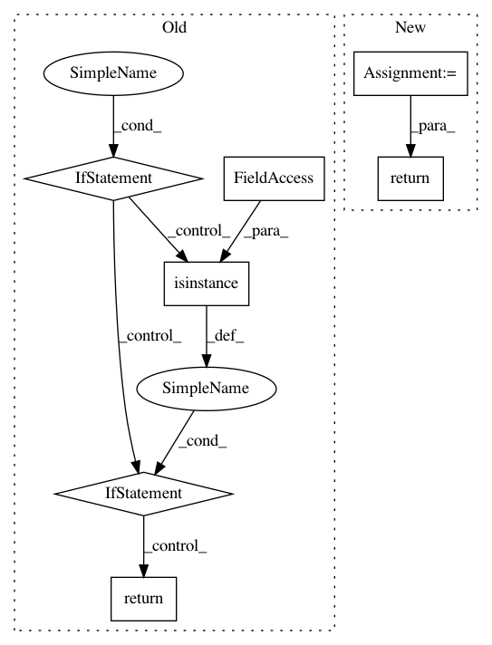

014963415d1cbc895f8c6f9e7f161950e37dc42e,kymatio/scattering2d/backend/torch_skcuda_backend.py,,_get_dtype,#,20
Before Change
Stream = namedtuple("Stream", ["ptr"])
def _get_dtype(t):
if isinstance(t, torch.cuda.FloatTensor):
return "float"
elif isinstance(t, torch.cuda.DoubleTensor):
return "double"
def _iscomplex(x):
return x.shape[-1] == 2
def _isreal(x):
After Change
dtypes = {torch.float32: "float",
torch.float64: "double"}
return dtypes[t.dtype]
def _iscomplex(x):
return x.shape[-1] == 2
In pattern: SUPERPATTERN
Frequency: 3
Non-data size: 7
Instances
Project Name: kymatio/kymatio
Commit Name: 014963415d1cbc895f8c6f9e7f161950e37dc42e
Time: 2020-02-18
Author: janden@flatironinstitute.org
File Name: kymatio/scattering2d/backend/torch_skcuda_backend.py
Class Name:
Method Name: _get_dtype
Project Name: pymanopt/pymanopt
Commit Name: 58bae639b6cfbebe1d11410a2069bc28f1873540
Time: 2020-01-27
Author: niklas.koep@gmail.com
File Name: pymanopt/autodiff/backends/_tensorflow.py
Class Name: _TensorFlowBackend
Method Name: is_compatible
Project Name: ericmjl/pyjanitor
Commit Name: 4a637c252e680506fb9e81690beac4ce1f49384d
Time: 2019-12-21
Author: 23343812+hectormz@users.noreply.github.com
File Name: janitor/utils.py
Class Name:
Method Name: _replace_empty_string_with_none